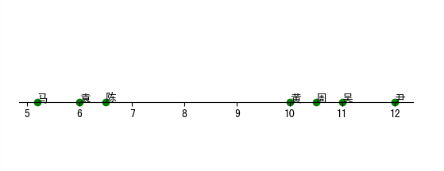

Created: 2019-01-02 三 00:23
| 机器学习及其别称 | 机器学习,人工智能,数据挖掘 |
| 机器学习算法门类 | 传统机器学习,深度学习,强化学习,迁移学习 |
| 机器学习与数学 | 机器学习,统计学,线性代数 |
| 机器学习与工程 | 机器学习,大数据,图像处理,自然语言处理(语音与文本) |
于是尹架想到了以每天工作时间作为参考, 对架构组进行评估.
| 架构 | 平均每天工作事件 | |------+------------------| | 尹 | 12.0 | | 黄 | 10.0 | | 陈 | 6.5 | | 周 | 10.5 | | 马 | 5.2 | | 吴 | 11.0 | | 袁 | 6.0 |

hello
hello